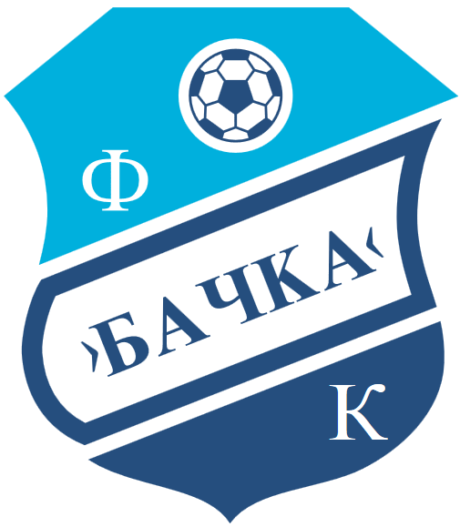

OFK Backa je fudbalski klub iz Backe Palanke i jedan je od najstarijih klubova u Srbiji. Klub je osnovan 1945. godine i svoje domace utakmice igra na stadionu "Slavko Maletin Vava". Boje kluba su plava i bela.
OFK Backa je kroz istoriju poznata po velikoj borbenosti i vernim navijacima. Klub je nastupao u vise rangova takmicenja, ukljucujuci i Superligu Srbije.
Klub predstavlja jedan od simbola Backe Palanke i ima dugu fudbalsku tradiciju. Tokom godina OFK Backa je okupljala veliki broj mladih talenata i ljubitelja fudbala.
Navijaci kluba poznati su po velikoj podrsci timu na domacim i gostujucim utakmicama. Atmosfera na stadionu cesto je jedna od najvecih snaga ekipe.
